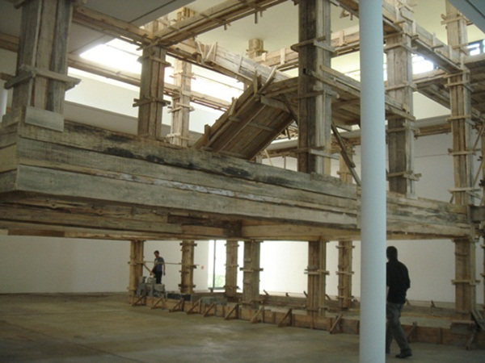
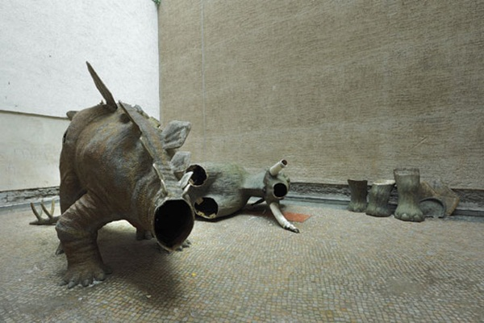
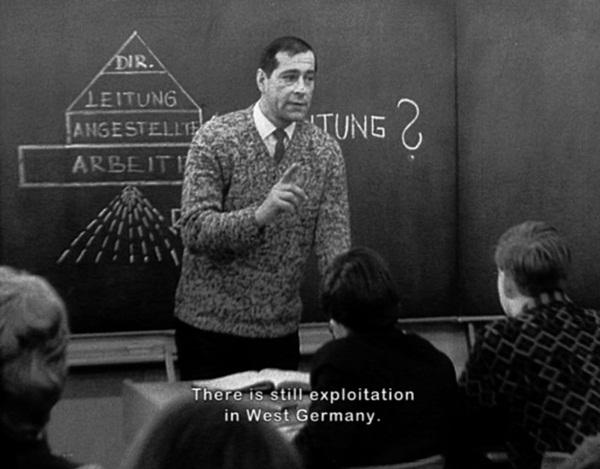

-
Art Sprawl with Chickens: On the Berlin Biennale
by Jessica Loudis August 25, 2010
If viewers were to take the theme of this year’s Berlin Biennale—the defiantly cryptic “what is waiting out there” –at face value, it would be safe to assume that the answer is large-scale installations, room after room of line drawings, a handful of chickens, and slightly didactic political art. Instead, curator Kathrin Rhomberg offers an even more obtuse definition: the exhibition “present[s]artistic positions which direct their gazes outward, at reality, while also attacking the aloof pleasure taken in the outward gaze.”
The tension between political engagement and fixed critical positions may have been the stated theme of the show, but a lack of uniformity emerged as the more prominent one. With six sites sprawled across the city, the Biennale seemed content to prioritize scope over cohesion, impressing the viewer—and especially those from New York—with the sheer amount of space at its disposal. The exhibition’s flagship space was the Kunst Werke Institute for Contemporary Art, a renovated margarine factory in downtown Berlin, but alternate sites fanned out across Mitte and Kreuzberg, colonizing the city with a vague statement about what Berlin’s art scene has to say in 2010.
Visitors enter the KW site through the basement of the building, walking through a series of narrow passageways before emerging into a basketball court-sized room taken up by the wooden skeleton of an unfinished house. The house—as well as an accompanying courtyard occupied by about a dozen chickens—comprised Petrit Halilaj’s installation, The Places, I’m Looking for, My Dear, Are Utopian Places, They Are Boring and I Don’t Know How to Make Them Real. Pigeons milled around the upper sections of the rafters, and despite being grandiose in scale, the piece firmly established the show’s DIY attitude, creating the atmosphere of a teenager’s house party in his parents’ mansion. Two more floors of the four-story building were turned over to Halilaj’s work (also inexplicably chicken-themed) and the rest of the site showcased the exhibition’s recurring themes; immigration, sexuality, and anti-capitalism.
At the Oranienplatz 17 site in Kreuzberg—an abandoned department store—viewers were ushered past a graveyard of coat racks before entering the heart of the show, five floors taken up largely with video art. When visitors were ready to resurface, they were invited into the attic, a windowed space overlooking Oranienplatz square that some maudlin curator had chosen to fill with Jeff Beck. The musical selection was a tipoff—at its worst, the work at KW and Kreuzberg seemed reminiscent of an art school thesis show: heavy-handed and unwilling to depart from predictable themes. Short films featured artists antagonizing Israeli border guards and women making out in a hallway; video installations juxtaposed Wall Street traders with African tribal warriors; and in one installation piece, the artist lay in a Plexiglas box with names of diseases written on his body, a “performative exaggeration depict[ing] the industrialization of life itself,” the description informed inattentive visitors.
For my money, the Biennale’s most impressive—and subtle—works were sculptural, and among these, the interventions into the vast exhibition spaces were most satisfying. In Klub Europa German artist Hans Schabus placed a woolly mammoth and decapitated stegosaurus in the middle of the Oranienplatz’s narrow courtyard, making it difficult for viewers to catch the entirety of the visual joke without leaning out the window to see it. With Das Haus Bleibt Still (the house stays still) Adrian Lohmüller set up a Chinese-water-torture piping system that slowly dripped onto a salt block, creating crystal formations that melted into a nearby bed. On the non-sculptural end of things, other notable pieces included Vietnamese artist Dahn Vo’s dismantled computers, which were alternately placed behind display cases and laid out flea-market style; and Thomas Judin’s haunting photos from his series Echoes. In keeping with the show’s quieter theme of ‘home,’ Vo also opened up his apartment as one of the exhibition’s venues.
One piece that certainly deserved more attention than biennale formatting permits was Renzo Marten’s Episode III: Enjoy Poverty a 90-minute gonzo art documentary that debuted two years and is now making the gallery rounds. The film poses the question of whether poverty is a resource—Martens suggests that it is—and depicts the artist traveling through the Congo with a neon sign instructing villagers to “enjoy poverty” by assuming control of their images in the media. A la Fitzcarraldo, Martens travels largely by boat, and many of the film’s most striking moments feature that sign flashing in the darkness.
With pieces like Enjoy Poverty and Phil Collins’ excellent film Marxism Today scattered through the show, the Biennale’s shortcomings were not a failure of the art, so much, but sprung form an inability to wrangle the pieces into conversation with each other. Granted, this is a hazard of all big exhibitions, but by both overloading the space and refusing to organize it with coherent themes or questions, the curators handicapped both artists and viewers. The show was ultimately very worth seeing, but perhaps in the future, Biennale curators might consider adopting one of the critical vantage points they went out of their way to reject.